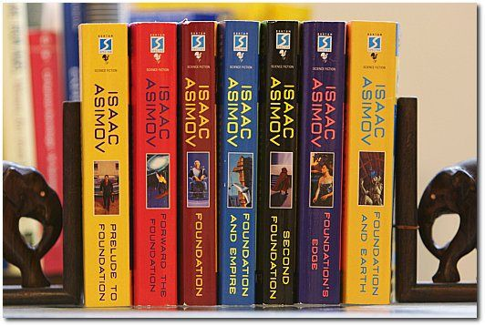

Isaac Asimov
Eserleri
Asimov, Vakıf (İng: Foundation) ve Robot dizi kitaρları ile de büyük ün kazandı.
- Ölü Gezegen
- Güneşin Tanrıları
- Şafağın Robotları
- Kurtarıcı
- Sonsuzun Tohumları
- Tanrılar ve İmparatorlar
- Zamandan Kaçış
- İmparatorluk Kurulurken
- İmparatorluk
- Altın Galaksi
- Gizli Tanrılar
- Galaksi Çöküyor
- Vakıf Kurulurken
- Vakıf (kitap)
- Vakıf ve İmparatorluk
- İkinci Vakıf
- Vakfın Sınırı
- Vakıf İleri
- Vakıf ve Dünya
- Dolu Dolu Yaşadım
- Bilim ve Buluşlar Tarihi
- Dün Bugün Yarın
- Robot Öyküleri Antolojisi
- Karadul Bulmacaları
- Sonsuzluğun Sonu
- Üç Robot Yasası
- Uzayın Bekçileri
- Melezler Venüste
- Ben Robot
- Güle Güle Dünya Son Öyküler
- Patlayan Güneşler Üstnovaların Taşıdığı Gizler
- Yeryüzü ve Uzay
- Uzayın Sınırları
- Bilinmeyen Tehlike
- İnsanlığın Geleceği Dünyamızı Tehdit Eden Felaketler
- Marslılar
- Dünya Dışı Uygarlıklar
- Dünya Hepimize Yeter
- Hedef Beyin
- Asi Gezegen Tyrran
- Uğursuz Gezegen Galactica
- Çelik Mağaralar